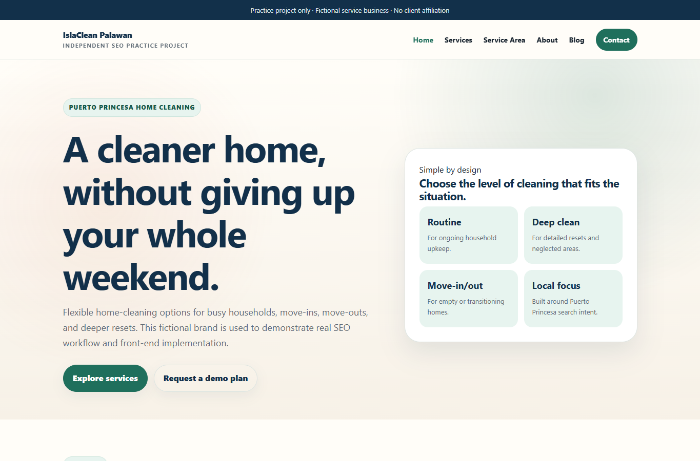

Independent project · Website implementation
IslaClean Palawan.
A fictional local-service website developed as a portfolio project, with a complete set of browsable pages and a working demo enquiry flow.
- My role
- AI-assisted HTML, CSS and JavaScript project development
- Output
- 10 live pages and a testable demo form
Live project
Open it. Browse it. Test it.

What it demonstrates
A usable structure for local services.
- Service pages
- Separate house cleaning, deep cleaning and move-in / move-out pages.
- Local context
- A Puerto Princesa service-area page linked to the service content.
- On-page work
- Distinct page titles, descriptions, headings and relevant internal links.
- Content
- A deep-cleaning checklist connected to the relevant service page.
- Demo interaction
- A browser-only form and CTA events recorded in the local dataLayer.
Verified output
10 pages. A testable enquiry flow.
The project includes Home, Services, House Cleaning, Deep Cleaning, Move-In / Move-Out Cleaning, Service Area, About, Blog, a checklist article and Contact.
The demo form clears its fields and displays a confirmation without sending personal information. CTA and form events can be inspected in the browser. This demonstrates event handling; a live GA4 conversion implementation is not claimed.
IslaClean is a fictional practice brand. Its pages use noindex, and it is not presented as a client campaign or a source of real leads.